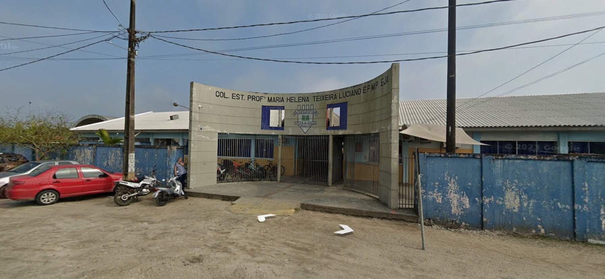
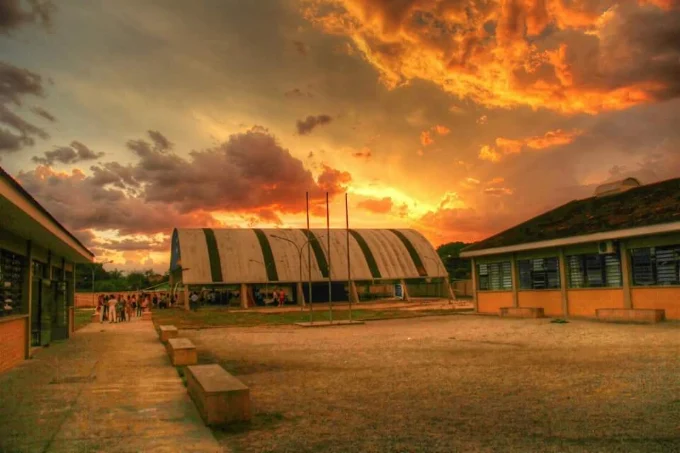

Cultura caiçara / World Localization Day (2026)
alunos participaram de uma atividade com pescadores tradicionais, conhecendo a história, os saberes e as práticas da cultura caiçara.
Evento"Educação pública, presente e futuro para todos"
Uma escola da rede estadual comprometida com um ensino público de qualidade, do 6º ano do Fundamental ao Ensino Médio, formando estudantes para a vida e para o mundo do trabalho.

Sobre a escola
O Colégio Estadual Professora Maria Helena Teixeira Luciano está localizado no Balneário Shangri-Lá e é mantido pelo Governo do Estado do Paraná. Documentos do Conselho Estadual de Educação registram a instituição desde pelo menos a década de 1990, com o Ensino Fundamental autorizado a funcionar em 1999.
Missão: garantir educação pública, inclusiva e de qualidade, formando cidadãos críticos, preparados para o mercado de trabalho e para a continuidade dos estudos.
Valores:

Diferenciais da escola:
Ensino / Cursos
Atendemos estudantes do Ensino Fundamental (anos finais) ao Ensino Médio, com a opção de cursar o Ensino Médio em paralelo ao curso Técnico em Análise e Desenvolvimento de Sistemas (ADS).
Mural da escola
Fique por dentro do que está acontecendo no colégio. Duplique os cartões abaixo para adicionar mais notícias.
alunos participaram de uma atividade com pescadores tradicionais, conhecendo a história, os saberes e as práticas da cultura caiçara.
EventoJá estão abertas as inscrições para novas turmas do Ensino Médio integrado ao curso Técnico em ADS.
NotíciaEncontro pedagógico para apresentação dos resultados do bimestre e orientações gerais.
AvisoEquipe do colégio se destaca em olimpíada regional de robótica com projeto de automação escolar.
ConquistaApresentações artísticas, gastronomia e exposições preparadas pelas turmas de todos os turnos.
EventoAplicação de simulado gratuito para estudantes do 3º ano do Ensino Médio.
AvisoDúvidas frequentes
As matrículas são feitas presencialmente na secretaria da escola ou pelo sistema da Secretaria de Educação do estado, mediante apresentação de documentos do estudante e do responsável.
RG e CPF do estudante e do responsável, comprovante de residência, histórico escolar (ou declaração de transferência) e comprovante de vacinação.
Sim. O estudante cursa o Ensino Médio regular em um turno e as disciplinas técnicas do curso de Análise e Desenvolvimento de Sistemas no turno complementar.
Sim, a escola oferece merenda gratuita em todos os turnos de funcionamento, seguindo o cardápio do Programa Nacional de Alimentação Escolar.
Você pode entrar em contato pelo telefone, e-mail ou WhatsApp da secretaria, disponíveis na seção de Contato desta página.
Contato